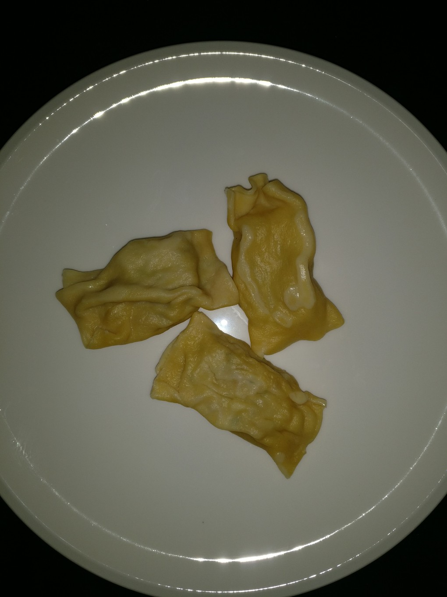

Maultaschen
Home

Description
Maultaschen are a traditional German dish, particularly popular in the Swabian region. They are large, filled pasta pockets that resemble ravioli or dumplings. The filling typically consists of a mixture of minced meat (usually pork or beef), spinach, onions, breadcrumbs, and various herbs and spices. The dough is made from flour, eggs, and water, rolled out thinly, and then filled with the meat mixture before being sealed and cooked.
Ingredients per person
- 1.5kg pasta dough
- 500g sausage meat
- 500g beef tartare
- 1 can pork meat
- 150g smoked meat
- 6 onions
- 2 bunches parsley
- 1 stalk leek
- 8 rolls
- 6 eggs
- 0.5 cup sour cream
- nutmeg
- pepper
- salt
- cayenne pepper
- paprika powder
Instructions
- Simmer the finely chopped onion until opaque.
- Add the chopped parsley and finely chopped leek and simmer until it is soft.
- In a mixing bowl, combine the minced meat, breadcrumbs, sour cream, egg, salt, pepper, cayenne pepper, paprika powder and a pinch of nutmeg if desired. Mix well until all ingredients are thoroughly combined.
- Add the simmered ingredients and stir until it is evenly distributed.
- Roll out the pasta dough on a floured surface to about 1-2mm thickness. Cut the dough into rectangles of approximately 10cm x 20cm.
- Spoon a generous amount of the filling onto one third of each pasta rectangle. Fold the third over the remaining dough two times to create a sealed pocket. Press the edges firmly to ensure they are well sealed.
- Bring a large pot of salted water to a gentle boil. Carefully add the Maultaschen to the water and cook for about 3-5 minutes, or until they float to the surface and are cooked through.
- Remove the Maultaschen with a slotted spoon and drain well.
- Serve the Maultaschen hot, topped with browned onions and a side of potato salad or in a flavorful broth.
Enjoy your homemade Maultaschen!